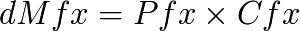
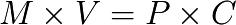

On the Quantitative Money Theory
The general definition of the field of value allows to find economic results common to limits. Thus, let the equation of the field of value be :

In the case of a balanced economy pseudo-isolated of null local creation of money, we have then :

Or also :

Along a circular line of exchange, we have then by doing a complete turn, during a time « t » :

Which, if production remains unchanged, and prices stable, and for a time short enough where the production stays similar, and where producers are not replaced by next generation, gives us the result of the quantitative theory of money :

Where V = t = number of complete cycles of monetized exchanges.

Circular lines of exchanges of value and money (Luc Fievet RTM 2.0)
Which is then an equality concerning only global and integrable quantities. This result does not consider the local fluctuations of space-time reference, and is only valid within a pseudo-isolated economy, for a short time where changes - be they productive, individual or monetary - are negligible.
The bias of a vision only global, is the non-relativity of measure of value. Because globally we find here or there an « exchange of values » we will decide that value is « here ». Yet this measure only concerns its actors, and is not stable neither in time, nor in space (from other individuals point of view).

LETSystem and non-monetized values in the central « debt » money (Luc Fievet RTM 2.0)
That is if money is created asymmetrically, not dense, the value is stored or exchange so heavily in another part of the economy without being monetized (if hollow), or the creation of a new local currency becomes necessary (creation of LETSystem).
As this is a phenomenon of accumulation, the output of this impasse can be done either via the hyperinflation of sub-monetized values, possible by issuing of violent remedial currency or by the gradual process of Universal Dividend, which monetizes sustainably and gradually the economy.
As noted in the calculation of the optimal Universal Dividend, one can get out distortions by setting the desired rate of Universal Dividend. This is obviously a great need to conceive a fully transparent and stable configuration in time, otherwise it is not surprising to see a surge of violent economic behaviours, anticipating choices subject to suspicion as to their subsequent changes.
This is a complete reversal of the current paradigm in 2010 ! Instead of Central Banks that are trying to maintain arbitrarily end of life values with hidden and suspicious monetary emissions that promote a caste of initiated leaders in place, and therefore artificial and unhelpful maintain of monopolies on old values, we need a currency with stable, dense and transparent issuance, in which the values fluctuate, and the individual economic positions change with the respect of the freedom of each individual, by strongly encouraging individual creativity.
So if we look the axioms of the Quantitative Theory of Money, which defines the money as :
Accounting unit
Medium of Exchange
Store of Value
The paradigm of the RTM which defines it as the four freedoms of democratic change of the code, access to resources, production and trade, invalidates the consistency of these axioms. “Store of Value” is inconsistent with the medium of exchange. The currency cannot be compatible with these two concepts at once. Only a short period of time permits to consider a stable value of the money, like any other economic good or service. Its universality as a medium of exchange in space and time can not be ensured with this pseudo-steady value only via a stable issuance.
This is the historical experimental evidence that validates the RTM against the QTM. No money has been maintained as it was turning into a store of value at the expense of its trading function.